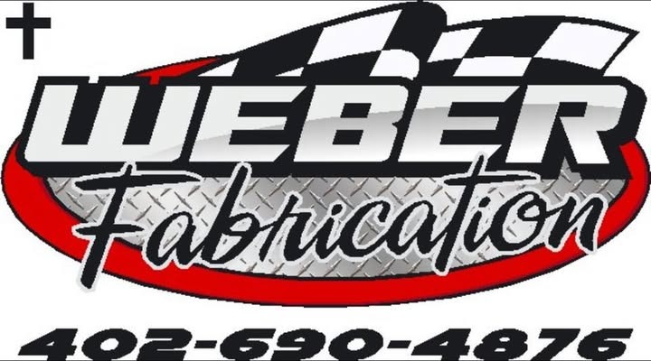
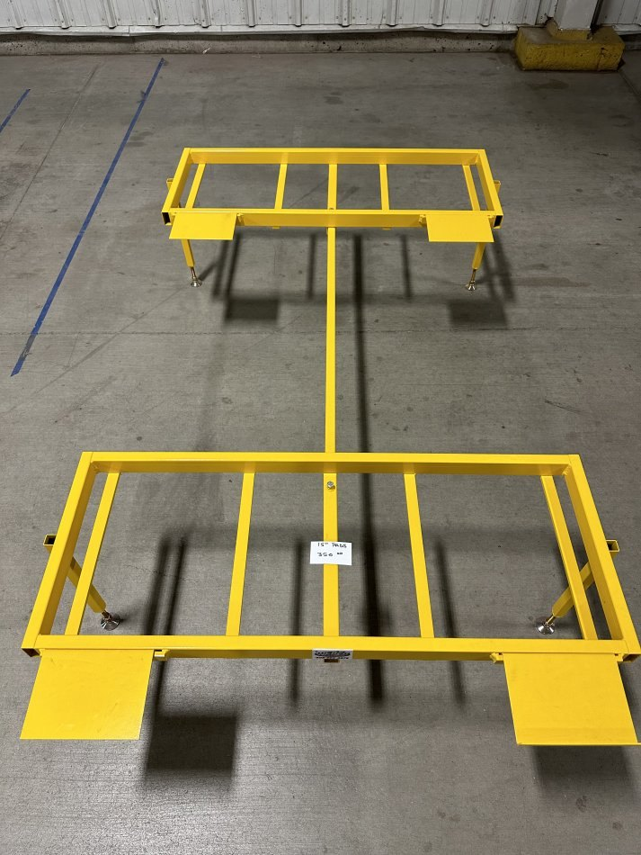
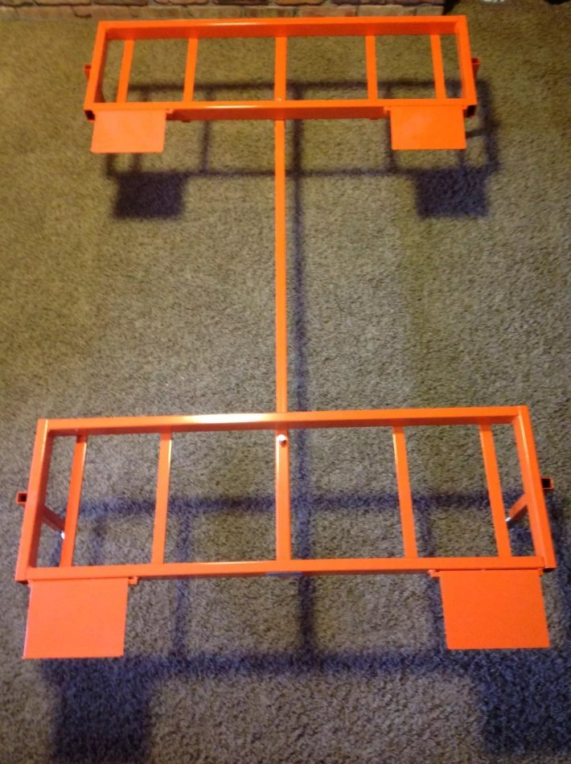

Council Bluffs, Iowa
High-end kart racing products. Built to save the racer money.
Weber Fabrication builds tire surfacers, hot boxes, roll-off scale stands, and custom kart equipment — quality work without the big-shop price.

About the shop
Kart racing fab from Council Bluffs.
Weber Fabrication is a Council Bluffs, Iowa shop run by Todd Weber. The mission is simple, and it is right there on the Facebook page: build high-end kart racing products, and save the racer money doing it.
From tire surfacers and hot boxes to roll-off scale stands and other custom work, the shop builds equipment racers actually use — and it stays involved in the racing community, including class sponsorships at tracks like Mini E Raceway in Eagle, Nebraska.
What we build
Equipment for the kart shop and the trailer.
These are products Todd has built and sold to kart racers. Call, text, or message on Facebook for current options, colors, and pricing.
-
Tire surfacers
Single-speed and variable-speed tire surfacers, built for kart racers who need tires prepped and ready without overpaying.
-
Hot boxes & rollers
Hot boxes, do-it-yourself hot box kits, and knurled or non-knurled rollers and inserts for racers who build their own.
-
Roll-off scale stands
Custom roll-off stands for a range of scale sizes. Powder-coated in multiple colors or left bare, with removable pads to help with chassis changes.
-
Custom fabrication
Need something specific for your program? Ask. Weber Fabrication is set up to build custom kart racing equipment around what you need.
Why Weber
High-end parts. Racer-friendly prices.
-
Built to a standard, priced for racers
The shop’s own tagline says it best: high-end kart racing products, made in a way that saves the racer money.
-
Custom work from Council Bluffs
Equipment is built in Council Bluffs, Iowa, and ships from Iowa. Colors, sizes, and setups can be worked out directly with Todd.
-
In the racing community
Weber Fabrication sponsors karting classes — including the Flat Predator class at Mini E Raceway in Eagle, Nebraska — and stays in touch with the racers who use the equipment.
Gallery
A look at the work.
Real photos of roll-off scale stands built by Weber Fabrication. More photos live on the Facebook page.


Get in touch
Ready to talk about a build?
Call or text Todd Weber, send an email, or message the shop on Facebook. Hours and a street address are not listed publicly, so Facebook and the phone are the best places to start.
- Phone 402-690-4876
- Email weberfabrication@yahoo.com
- Facebook Weber Fabrication
- Location Council Bluffs, Iowa